A custom iridescent glass shader created in Unreal Engine using the Material Editor! I created it as a learning exercise to gain hands-on experience with Unreal Engine's Material Editor, shader creation process, and the principles of iridescence in materials. The shader is designed to simulate the optical phenomenon of iridescence in a stylized manner, where the color of the material changes based on the viewing angle. The shader utilizes a combination of Fresnel effects, and lerp color blending techniques to achieve a stylized iridescence effect.
I am satisfied with the current stylized visual state of the shader, but I am still working on refining the material instance interface to allow for more user-friendly adjustments of the iridescent properties. In my opinion, a tool is only as good as its usability -- so I am also exploring additional techniques to enhance the features and adjustability of the shader, such as incorporating chained lerps in a material graph component node to include more colors in the fresnel effects (imagine getting in a whole rainbow!). Ideally, I could make a visually simple, adjustable and maintainable component, so that artists using this shader can easily adjust the iridescent properties without needing to modify the underlying material graph.
Also featured in the video above! (teal dragon head)
Material Sprays with a sparkle effect. The material is designed to simulate the appearance of sparkling glitter that emit light and shimmer as the player camera moves. The spray effect can be customized in terms of color.
Adjustment of sparkles to be more visually appealing, and to have a more adjustable material instance interface. This would include being able to adjust the size, shape of the spray, sparkle size, intensity of the sparkles, and speed of the sparkle animation. I am also exploring additional techniques to enhance the features and adjustability of the material, such as incorporating more complex particle systems and texture animations to create a more dynamic and fun effect. The sparkle effect is achieved by utilizing a combination of particle systems, material shaders, and texture animations.
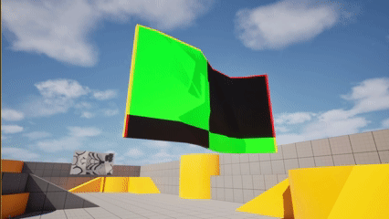
This project is a simple waving flag shader created in Unreal Engine using the Material Editor, and Autodesk Maya. I created it as a focused learning exercise to gain hands-on experience with Unreal Engine's Material Editor, shader creation process, and simple modeling in Autodesk Maya.
The shader uses a sine wave function to create the waving motion, which is driven by the world position of the vertices. I also implemented a simple texture coordinate manipulation to create a more dynamic and realistic waving effect. This project helped me understand the basics of shader creation with material nodes in Unreal Engine and how to manipulate vertex positions and texture coordinates to achieve desired visual effects.
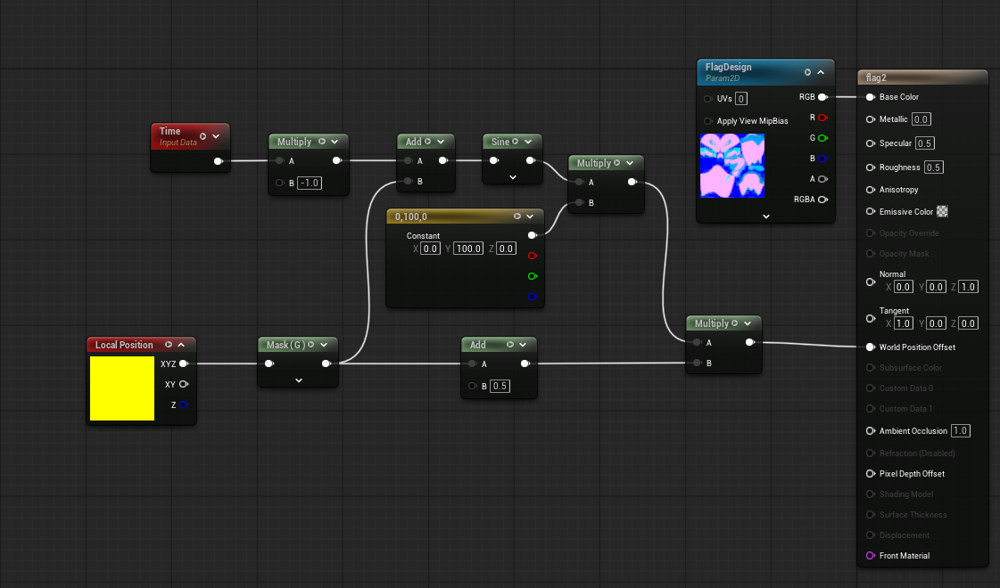
With more time, I would have made a flag model with a higher vertex count to create a smoother waving effect. In my shader, I would simplify and collapse nodes to improve performance. I would further develop the shader to include additional parameters to allow for speed and intensity customization of the waving motion.
This project is a custom outline shader written in HLSL using Unity’s ShaderLab syntax for the Universal Render Pipeline (URP). I created it as a focused learning exercise to gain hands-on experience with HLSL, shader fundamentals, and Unity’s Universal Render Pipeline.
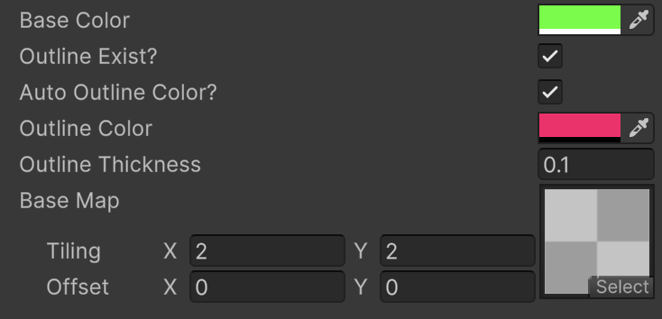
My outline shader has several adjustable attributes which can be changed in the material editor. This allows the user of the material to easily customize the shader’s behavior without modifying code.
dot()
function to calculate the grayscale luminance value of the base color, and
then used that luminance value to drive a lerp() blend for the
outline color.
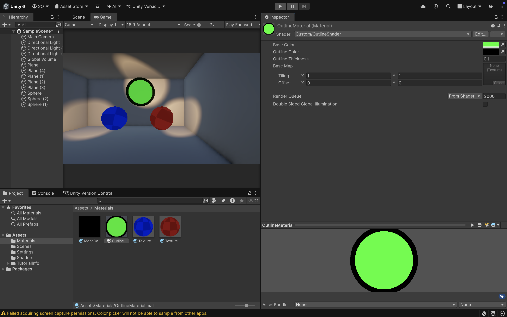
My goal for this project was to learn the fundamentals of HLSL and ShaderLab by throwing myself into the process and learning through iteration. I now feel I have a solid understanding of variable declaration, data types, structs, interpolators, and per-vertex versus per-fragment logic in HLSL.
I also learned several important conventions and optimizations, such as
utilizing floats instead of booleans for toggles, and using the
lerp() function with a 0/1 value instead of an if/else statement. I
implemented this approach after learning that avoiding branching logic is
generally more GPU-friendly. Using floats instead of booleans also allows these
values to be directly composed into mathematical functions like
lerp().
Additionally, I learned how human perceptual weighting of RGB channels applies
to perceived luminance in the digital RGBA color spectrum, and how to account
for this using weighted modifiers inside the dot() function.
Experimenting with multiple implementations helped reinforce these conventions
and gave me a more intuitive understanding of how shader math translates to
visual results.
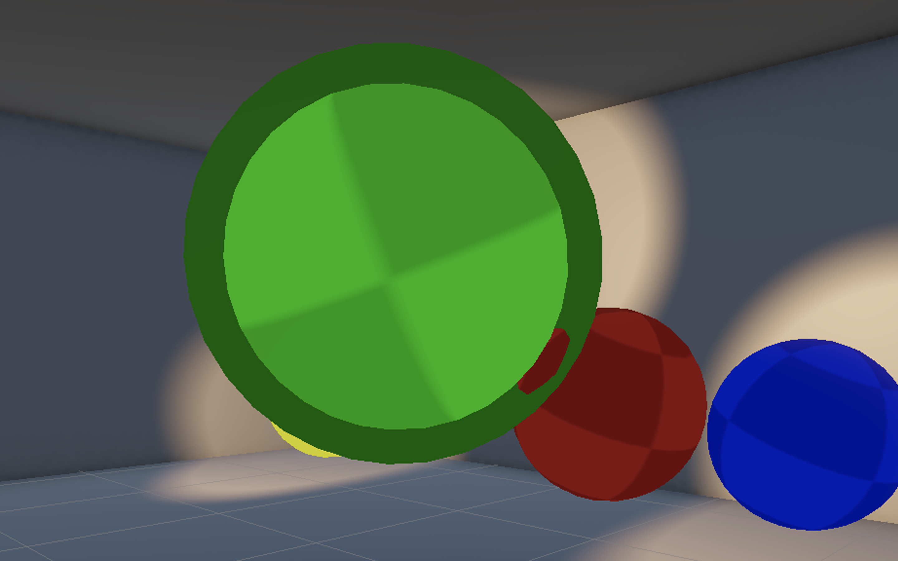
One known issue is that intersecting geometry can become visible inside the outline, breaking the illusion of a solid border. With more time, I would address this using depth-based techniques or stencil buffer approaches to ensure the outline remains visually solid, even in close-up or narrative-driven scenes.
Magician Match is an unreleased educational memory and pattern following game developed by Simcoach Games. A special thank you to the studio, as Simcoach Games has allowed me to share assets and visuals I created for their properties during my employment at the studio for portfolio purposes.
In this game, players take on the role of a magician's apprentice, Arel, who helps the magician "Magic Moon" perform magic tricks by collecting items as requested and setting them in the proper order. The game features vibrant 2D art, engaging "magic trick" animations, and special effects to create an joyful and motivating experience. I was responsible for creating all placeholder and finalized art assets, rigging and animating characters, and implementing particle effects. Magcian Match demonstrates breadth in my artistic skills, including but not limited to:
This breadth in skill and experience enables me to understand the needs of the artists I work with, and better aid in their issues.
Below are some examples of the work I created for Magician Match.
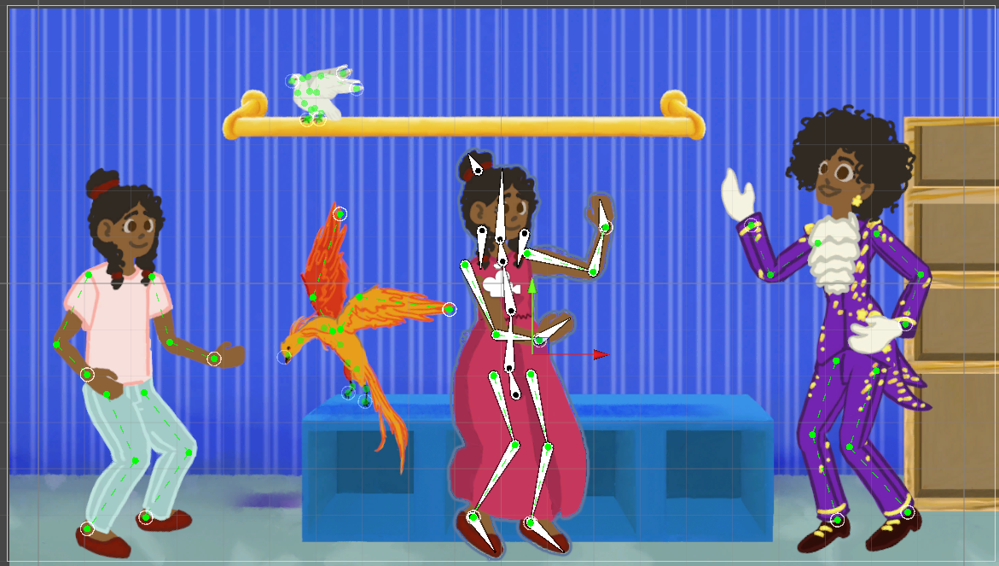
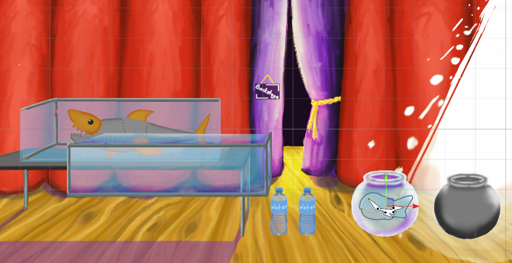
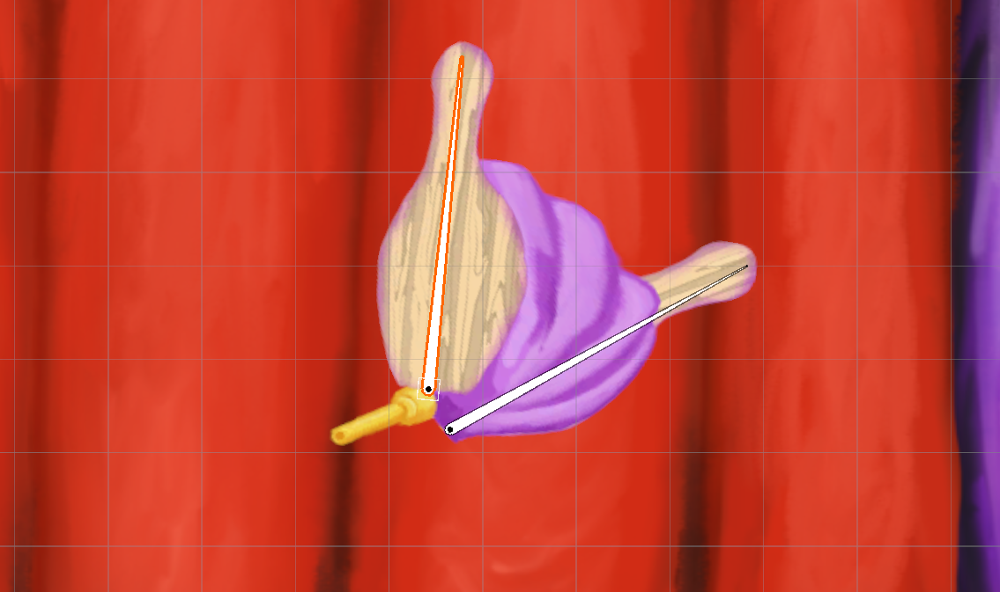
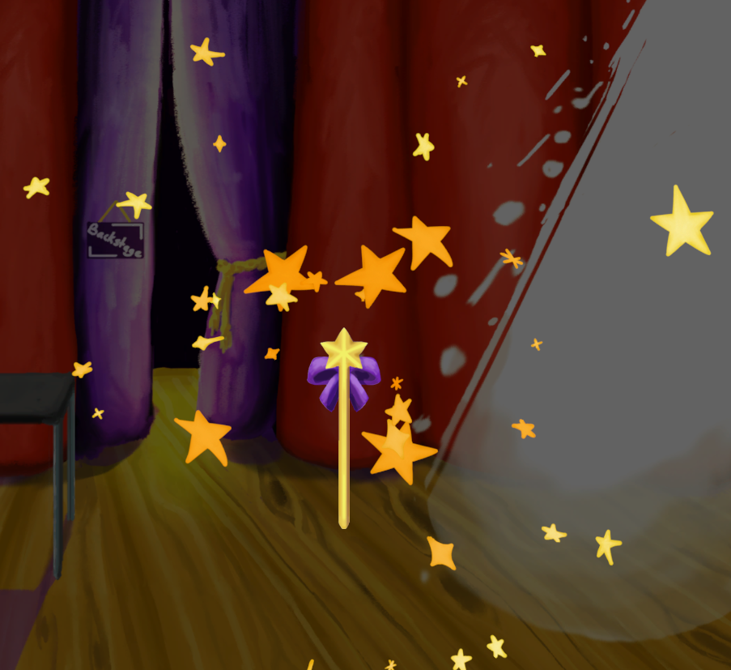
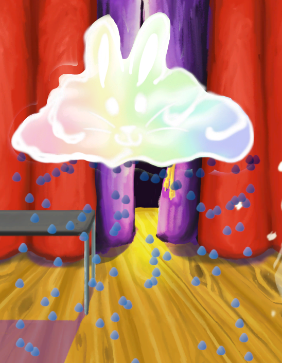
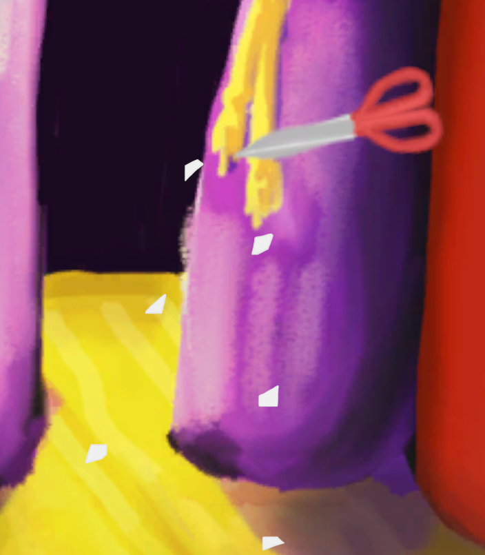
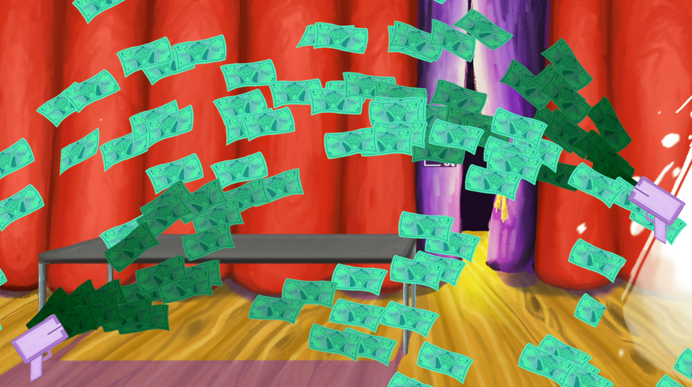
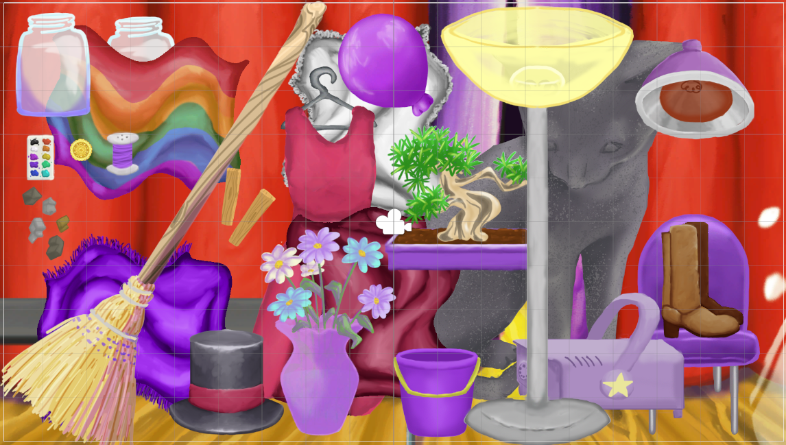